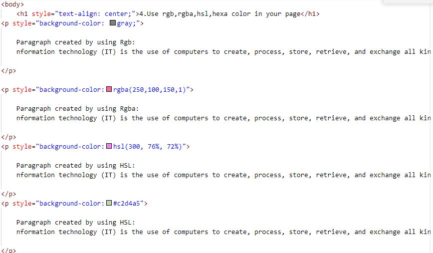

Paragraph created by using Rgb: nformation technology (IT) is the use of computers to create, process, store, retrieve, and exchange all kinds of electronic data[1] and information. IT is typically used within the context of business operations as opposed to personal or entertainment technologies.[2] IT is considered to be a subset of information and communications technology (ICT). An information technology system (IT system) is generally an information system, a communications system, or, more specifically speaking, a computer system – including all hardware, software, and peripheral equipment – operated by a limited group of IT users.
Paragraph created by using Rgba: nformation technology (IT) is the use of computers to create, process, store, retrieve, and exchange all kinds of electronic data[1] and information. IT is typically used within the context of business operations as opposed to personal or entertainment technologies.[2] IT is considered to be a subset of information and communications technology (ICT). An information technology system (IT system) is generally an information system, a communications system, or, more specifically speaking, a computer system – including all hardware, software, and peripheral equipment – operated by a limited group of IT users.
Paragraph created by using HSL: nformation technology (IT) is the use of computers to create, process, store, retrieve, and exchange all kinds of electronic data[1] and information. IT is typically used within the context of business operations as opposed to personal or entertainment technologies.[2] IT is considered to be a subset of information and communications technology (ICT). An information technology system (IT system) is generally an information system, a communications system, or, more specifically speaking, a computer system – including all hardware, software, and peripheral equipment – operated by a limited group of IT users.
Paragraph created by using HSL: nformation technology (IT) is the use of computers to create, process, store, retrieve, and exchange all kinds of electronic data[1] and information. IT is typically used within the context of business operations as opposed to personal or entertainment technologies.[2] IT is considered to be a subset of information and communications technology (ICT). An information technology system (IT system) is generally an information system, a communications system, or, more specifically speaking, a computer system – including all hardware, software, and peripheral equipment – operated by a limited group of IT users.
